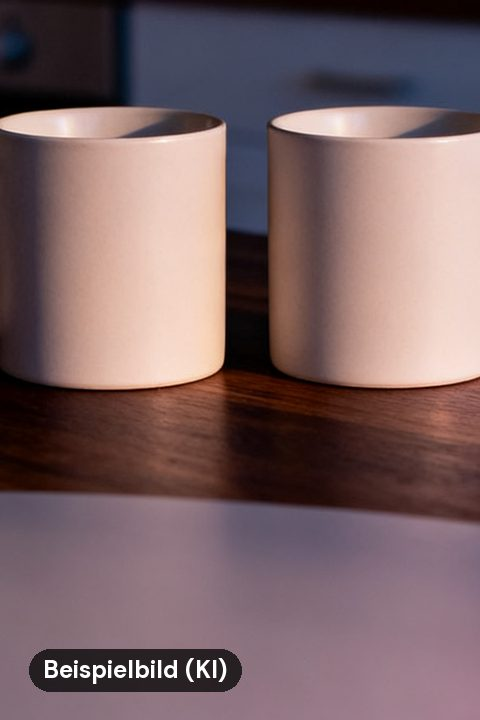
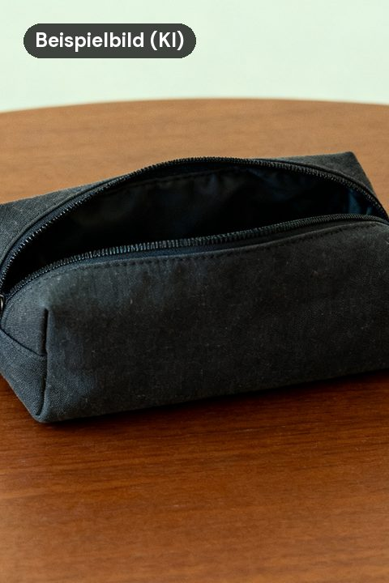
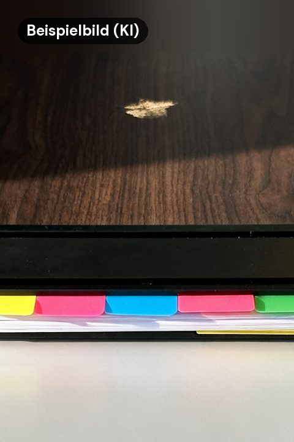
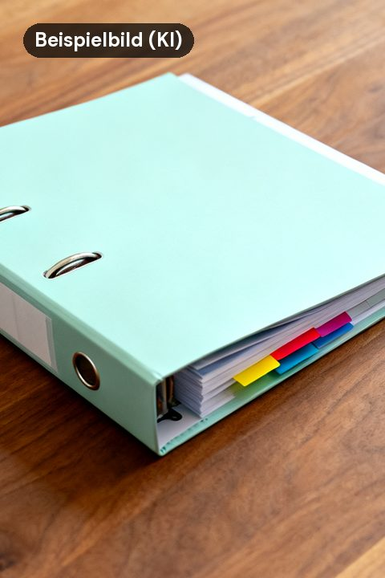
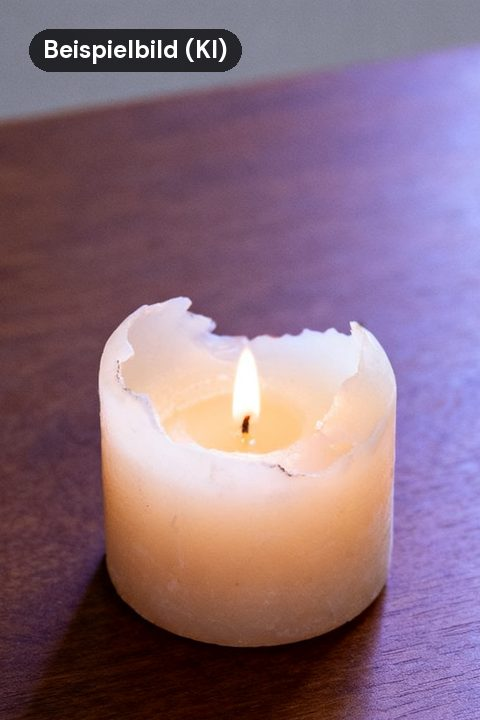
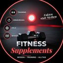
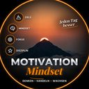

Ratgeber für den Alltag, jeden Tag neu
Ich erkläre Alltagsthemen Schritt für Schritt – als Beitrag zum Online-Lesen und als kostenloser 10-Seiten-Ratgeber (PDF) ohne Anmeldung, passend zu meinen Instagram-Posts.
- Kostenlos
- Ohne Anmeldung
- Online lesen
- 10-Seiten-PDF
Neueste Beiträge
Aus jedem Thema das Neueste zum Online-Lesen: der neueste Beitrag – wo es noch keinen gibt, das neueste Rezept oder der aktuelle PDF-Ratgeber. Fotos in Beiträgen und Rezepten sind KI-generierte Beispielbilder und im Bild gekennzeichnet.

Beziehung & PsychologieVergleich mit anderen Paaren: Fünf typische Fehler
Budget-Reisen & TravelKulturbeutel packen: Warum weniger reicht
Digital BusinessAutomatisierung: Welche Aufgabe lohnt sich zuerst?
Finanzen & InvestierenAbo-Inventur: Abbuchungen in zehn Minuten prüfen- Fitness & SupplementsProteinpulver Etikett: Pro 100 g oder pro Portion?
- KI & TechnikMail mit KI im eigenen Ton: Textprobe mitgeben
- Kochen & RezepteOne-Pot-Pasta: Alles in einem Topf
- Produktivität & MindsetGewohnheiten auf Reisen: Wie bleibt die Routine?
- Tech & GadgetsEqualizer am Kopfhörer einstellen: Fünf Schritte

Wissen & FaktenSunk-Cost-Falle: Warum wir Verlorenes weiter füttern
Themen und Seiten
Meine Themenseiten – je Thema Beiträge, Ratgeber und meine Kanäle. Such dir dein Thema aus und folge dort.
Beziehung & Psychologie Tipps
@beziehung_
psychologie_ tipps Verstehen, was in Beziehungen wirklich wirkt
Budget-Reisen & Travel Tipps
@budget_
travel_ tipps Clever planen, entspannt reisen
Digital Business Tipps
@digital_
business_ tipps Wissen rund ums Digital Business
Finanzen & Investieren Tipps
@finance_
invest_ tipps Geldwissen klar und einfach erklärt

Fitness & Supplements Tipps
@fitness_
supplements_ tipps Training, Ernährung und Fakten statt Mythen
KI & Technik Tipps
@ki_
tech_ tipps Künstliche Intelligenz verständlich erklärt
Kochen & Rezepte Tipps
@kochen_
rezepte_ tipps Einfache Rezepte für jeden Tag
Neon-Guide
– inoffizieller Guide zu GTA VI
Tipps, Anleitungen und News zu GTA 6 – inoffiziell, nicht verbunden mit Rockstar Games oder Take-Two Interactive.

Produktivität & Mindset Tipps
@motivation_
mindset_ tipps Jeden Tag ein neuer Impuls für dich
Tech & Gadgets Tipps
@tech_
gadgets_ tipps Technik, die den Alltag leichter macht
Wissen & Fakten Tipps
@wissen_
facts_ tipps Erstaunliches Wissen in kurzen Häppchen
Rezepte
Einfache Alltagsrezepte mit Zutaten, Mengen, Schritten und Allergenen. Die Bilder sind KI-generierte Beispielbilder und im Bild gekennzeichnet.

Neueste Ratgeber
Je Themenseite der aktuelle Ratgeber als 10-Seiten-PDF – ein Tipp auf „PDF“, und er ist da.
- Beziehung & Psychologie
Kosten teilen: 50:50 oder nach Einkommen?
Enthält Werbung (Affiliate-Links)Empfehlungen
PDF „Kosten teilen: 50:50 oder nach Einkommen?“ herunterladen - Budget-Reisen & Travel
Zimmer prüfen bei Ankunft: 6 Punkte, 10 Minuten
Enthält Werbung (Affiliate-Links)Empfehlungen
PDF „Zimmer prüfen bei Ankunft: 6 Punkte, 10 Minuten“ herunterladen - Digital Business
Gesprächsnotiz: 5 Zeilen direkt nach dem Kundentermin
Enthält Werbung (Affiliate-Links)Empfehlungen
PDF „Gesprächsnotiz: 5 Zeilen direkt nach dem Kundentermin“ herunterladen - Finanzen & Investieren
Spende absetzen: Wie viel Steuer sparst du?
Enthält Werbung (Affiliate-Links)Empfehlungen
PDF „Spende absetzen: Wie viel Steuer sparst du?“ herunterladen - Fitness & Supplements
Protein im Essen: Was steckt in Quark und Ei?
Enthält Werbung (Affiliate-Links)Empfehlungen
PDF „Protein im Essen: Was steckt in Quark und Ei?“ herunterladen - KI & Technik
Inkognito-Chat: Was bleibt?
Enthält Werbung (Affiliate-Links)Empfehlungen
PDF „Inkognito-Chat: Was bleibt?“ herunterladen - Kochen & Rezepte
Rotes Linsencurry mit Reis in 30 Minuten
Enthält Werbung (Affiliate-Links)Empfehlungen
PDF „Rotes Linsencurry mit Reis in 30 Minuten“ herunterladen - Produktivität & Mindset
Feste Wahl statt Grübeln: 3 Entscheidungen vorab
Enthält Werbung (Affiliate-Links)Empfehlungen
PDF „Feste Wahl statt Grübeln: 3 Entscheidungen vorab“ herunterladen - Tech & Gadgets
Powerbank im Flugzeug: So rechnest du auf Wh
Enthält Werbung (Affiliate-Links)Empfehlungen
PDF „Powerbank im Flugzeug: So rechnest du auf Wh“ herunterladen - Wissen & Fakten
Mond: Wie viele Erden passen bis dorthin?
Enthält Werbung (Affiliate-Links)Empfehlungen
PDF „Mond: Wie viele Erden passen bis dorthin?“ herunterladen


Archiv
Hier stehen alle veröffentlichten Ratgeber und Rezepte nach Jahr, Woche und Seite. Ältere Ratgeber bleiben so erreichbar.
Zum ArchivNeu: Neon-Guide – inoffizieller Guide zu GTA VI mit Tipps und News – Neon-Guide öffnen + Mitgliederbereich
Neue Ratgeber per E-Mail: Einmal pro Woche die neuesten Gratis-Ratgeber in dein Postfach. Kostenlos, jederzeit abbestellbar. Die Ratgeber selbst lädst du ohne Konto herunter. Das Formular liegt bei Brevo; Details in der Datenschutzerklärung.
Zum Newsletter (öffnet das Anmeldeformular bei Brevo in neuem Tab)Alle Inhalte sind KI-generiert (Art. 50 KI-VO), dienen der allgemeinen Information und ersetzen keine Anlage-, Steuer-, Rechts-, medizinische, ernährungsfachliche oder therapeutische Beratung im Einzelfall. Angaben ohne Gewähr.